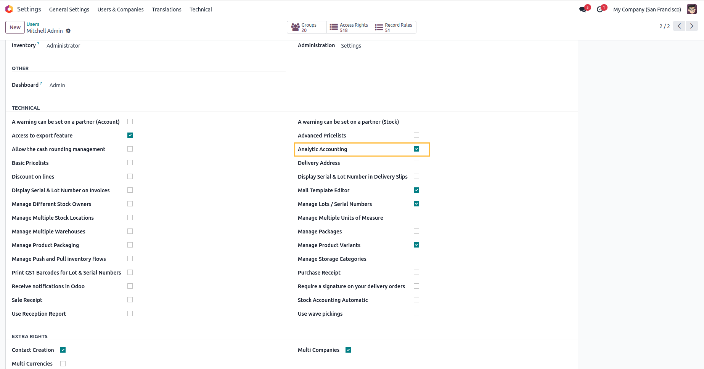
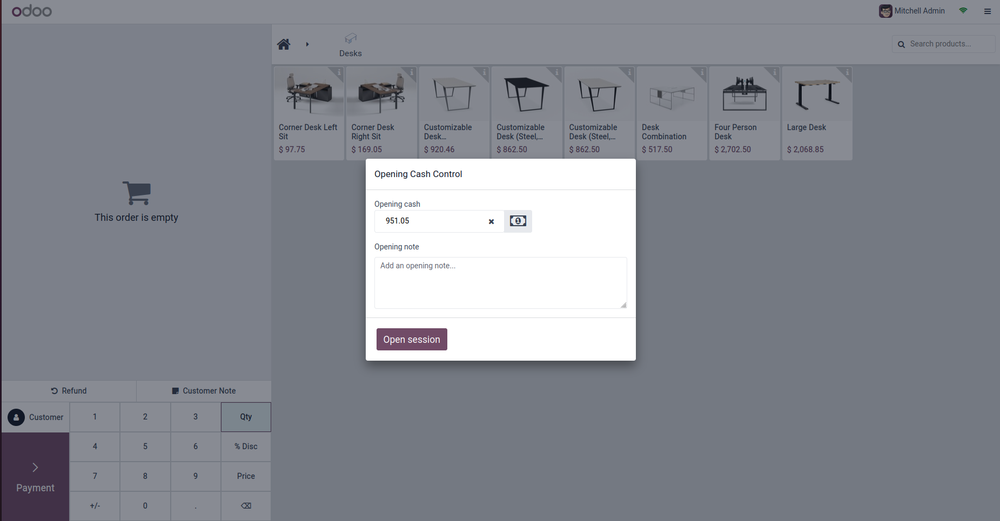

PoS Analytic Tag & Distribution
Seamless Analytic Integration for Odoo 19 Point of Sale
Odoo 19+ JSON Distribution Full Analytics SupportSeamless Analytic Integration for Odoo 19 Point of Sale
Odoo 19+ JSON Distribution Full Analytics SupportIn Odoo 19+, analytics use a modern JSON Distribution system. This module brings full support for this system to your PoS sessions and orders, ensuring accurate accounting and reporting.
Assign analytic accounts directly to your POS sessions for global tracking.
Each order inherits the correct analytic tags, flowing perfectly into your journal entries.
Full support for Odoo 19's new analytic distribution logic in Journal Items.
Understanding how data flows from configuration to accounting entries
POS Config → Set Default Analytic Account
The analytic account is configured once per POS systemPOS Session → Inherits Analytic Account from Config
Each new session automatically receives the analytic accountPOS Orders → Inherit from Session
All orders in the session carry the same analytic dataJournal Items → JSON Distribution Applied
When session closes, accounting entries are created with analytic distributionAnalytics Reports → Full Financial Tracking
Generate reports by department, project, or branch# File: pos_session.py def _create_account_move(self, balancing_account=False, ...): # Call parent method to create the journal entry res = super()._create_account_move(...) # Inherit analytic account from POS configuration self.pos_analytic_account_id = self.config_id.analytic_account_id if self.pos_analytic_account_id: # In Odoo 19, analytic_distribution is a JSON field # Format: {"account_id": percentage} distribution = { str(self.pos_analytic_account_id.id): 100.0 } # Apply to all journal item lines self.move_id.line_ids.write({ 'analytic_distribution': distribution }) return res
| Model | Field | Source | Type |
|---|---|---|---|
pos.config |
analytic_account_id |
Manual Configuration | Many2one |
pos.session |
pos_analytic_account_id |
Inherited from config_id | Many2one |
pos.order |
pos_analytic_account_id |
Related to session_id | Many2one (related) |
account.move.line |
analytic_distribution |
Written during move creation | JSON |
/* Single Account - 100% Distribution */ { "45": 100.0 } /* Multiple Accounts - Split Distribution */ { "45": 60.0, // 60% to Department A "52": 40.0 // 40% to Department B } /* Key: Analytic Account ID (as string) */ /* Value: Distribution percentage (float) */
Step-by-step setup and flow with screenshots

Path: Settings → Accounting → Analytics
Ensure Analytic Accounting is enabled for your users to start tracking costs and revenues across different dimensions (departments, projects, branches).

Path: Point of Sale → Configuration → Point of Sale
Select your default Analytic Account directly in the Point of Sale configuration. This account will be applied to all sessions and orders created from this POS.

Action: Open POS → New Session
Open your POS session normally. The module works silently in the background, automatically loading the analytic account configuration.

Action: Add products → Checkout → Payment
Add products and proceed to checkout. The analytic data is attached to the transaction automatically. No manual intervention needed!

Path: Point of Sale → Orders → Orders
View the Analytic Account directly on the PoS Order record in the backend. This field is inherited from the session automatically.

Path: Accounting → Accounting → Journal Items
Check your Journal Items to see the Analytic Distribution JSON field populated with your account and 100% distribution.
// Example JSON in database: { "45": 100.0 // 100% to selected analytic account }
Scenario: Company with 5 retail branches
Scenario: Event management company
Scenario: Hospital cafeteria
Scenario: Franchise network